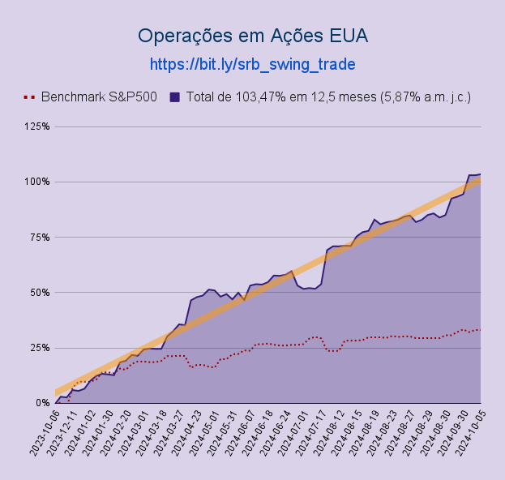

Este é um sistema em que o investidor
utiliza os resultados de um trader experiente para a diversificação de seu portifólio de investimento.
Por meio do Copy Trading, o investidor replica em sua conta, de forma automática e passiva, as operações realizadas pelo trader.
O cliente pode ajustar com o trader algumas configurações como o nível de risco, por exemplo.
Sistema acessível a qualquer pessoa.
Em caso de dúvidas, envie-nos uma mensagem direta pelo Instagram
@b.capital.s
ou pelo email:
sandro@sbsys.com.br
Por Sandro Roger Boschetti
Av. Getúlio Vargas, 671, sala 500, Savassi, Belo Horizonte, MG, 30.112-021
Instagram:
@b.capital.s
Resultados
Conforme mostrado no gráfico abaixo, obtivemos aproximadamente 100% de lucro num período de
um ano de trading. Isto dá aproximadamente 5,8% ao mês juros compostos. Este resultado foi bem
expressivo e deve-se a uma alavancagem de aproximadamente 2 vezes. Isto significa que o resultado
sem alavancagem (e bem mais seguro) teria sido de uns 50% (uns 3% a.m.).
Este resultado mesmo sem alavancagem é superior a escolher as campeãs da bolsa brasileira, já que estas
(exemplo: WEGE3 e RADL3) tem tido uma rentabilidade de uns 2% a.m. nos últimos 10 ou 20 anos.
Este resultado supera o índice bovespa (IBOV) e o índice SP500.
